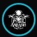

Estratégia
Cada partida envolve objetivos, leitura de cenário, tomada de decisão e coordenação entre jogadores.

Filhos deSeu primeiro combate começa aqui
Nunca jogou? A Filhos de Asgard apresenta o esporte de forma simples, segura e acolhedora — do primeiro contato ao seu primeiro dia em campo.
Comece por aqui
Airsoft é um esporte de estratégia, comunicação e trabalho em equipe, praticado com equipamentos próprios e regras de segurança. O objetivo é cumprir missões e cenários com responsabilidade, respeito e espírito esportivo.
Cada partida envolve objetivos, leitura de cenário, tomada de decisão e coordenação entre jogadores.
Comunicação e confiança valem mais do que jogar sozinho. O grupo avança e aprende junto.
Os cenários, equipamentos e funções criam uma experiência tática sem abrir mão do esporte e da segurança.
Honestidade, fair play e cuidado com todos em campo são parte central da experiência.
Nunca joguei. Posso participar?
O primeiro passo é conversar com a equipe. Nós explicamos como funciona, o que é necessário para o dia e quais cuidados você precisa conhecer antes de entrar em campo.
Do contato ao campo
Um caminho simples para reduzir dúvidas e tornar sua primeira experiência mais tranquila.
Conte que é iniciante e tire suas primeiras dúvidas.
Entenda local, horário, regras, proteção necessária e organização do evento.
Leve apenas o que foi orientado. Não é preciso comprar tudo antes de experimentar.
Antes do jogo, conheça limites do campo, sinais, regras e procedimentos.
Jogue, aprenda com o grupo e descubra qual estilo combina mais com você.
Sem complicação
Para começar, segurança e conforto vêm antes de acessórios. Cada campo e evento pode ter regras próprias.
Descubra seu estilo
Mobilidade, avanço e adaptação a diferentes situações.
Ajuda o grupo a manter organização, cobertura e continuidade.
Observação, comunicação e leitura do terreno.
Coordena decisões, objetivos e comunicação da equipe.
Você não precisa escolher uma função no primeiro dia. O melhor caminho é experimentar e descobrir onde se sente mais confortável.
Regra número um
Airsoft só é uma boa experiência quando todos respeitam as regras. Proteção ocular, briefing, áreas seguras, conduta responsável e orientação da organização devem ser tratados como obrigatórios.
Ver dúvidas comunsQuem apresenta esse universo a você
Promover o airsoft tático com disciplina, respeito e trabalho em equipe, valorizando segurança, estratégia e companheirismo.
Fundada em 2024, a equipe nasceu da paixão por táticas militares e pela mitologia nórdica. De quatro amigos, evoluiu para uma irmandade.
Lealdade, coragem, honra e camaradagem. Cada membro representa o nome da equipe dentro e fora do campo.
Momentos de batalha
A galeria foi preparada para crescer sem deixar a página pesada. Você pode organizar futuros registros por categoria.
Portal do recruta
Responda três perguntas e receba uma orientação inicial. Nada é enviado para fora do seu navegador.
Antes do primeiro jogo
Não necessariamente. Entre em contato com a equipe antes de comprar qualquer coisa. Assim você entende o que realmente será necessário para a experiência que pretende fazer.
Sim, desde que você receba orientação, respeite as regras do evento e utilize a proteção exigida. Iniciantes devem priorizar aprendizado e segurança.
Roupas confortáveis e resistentes e calçado firme costumam ser uma boa base. A equipe pode orientar de acordo com o terreno e o evento.
O melhor é falar com a organização ou equipe antes. Cada evento pode ter inscrição, regras, horários, limites e requisitos próprios.
Não. Começar de forma simples costuma ser melhor. Com o tempo você descobre quais funções, equipamentos e estilos combinam com você.